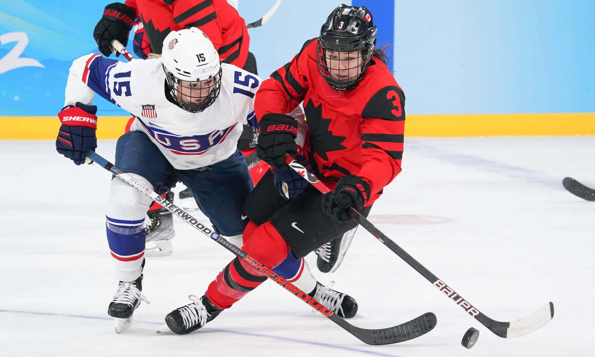
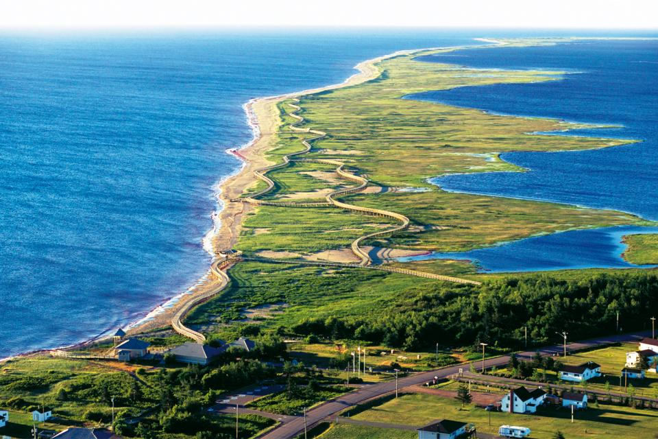
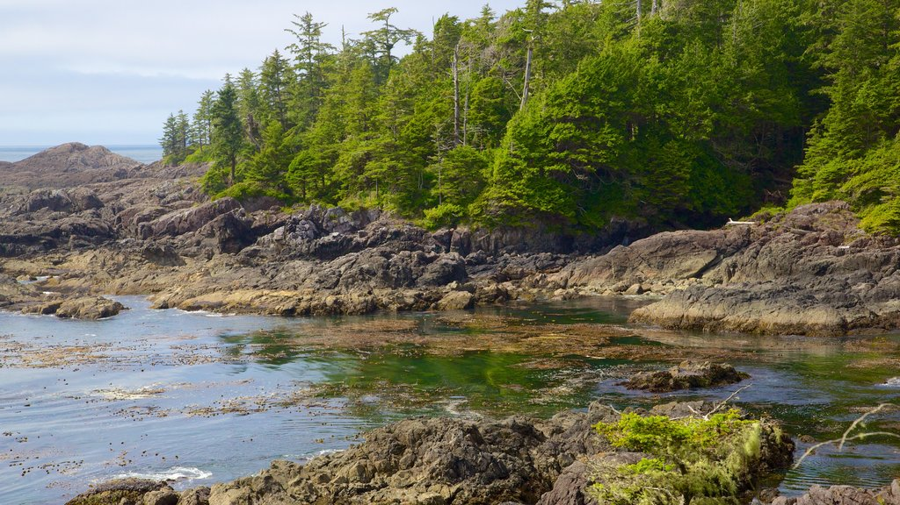
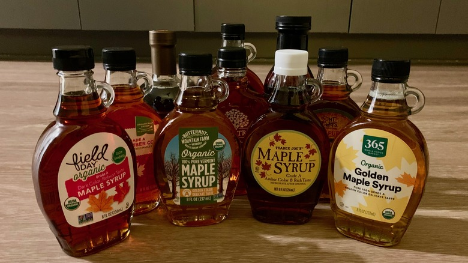
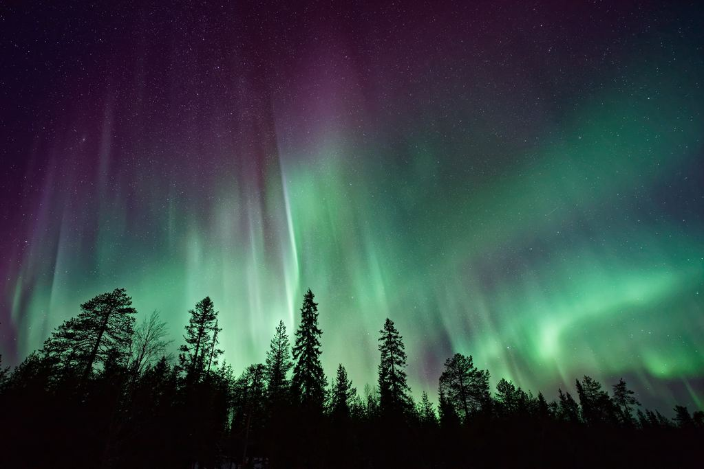

Aqui falaremos algumas curiosidades sobre o Canadá. São elas:
Parques Nacionais e Reservas
O Canadá possui uma vasta área de território
dedicada a parques nacionais, reservas naturais e áreas protegidas. O
Parque Nacional de Banff,
por exemplo, é o primeiro parque nacional do Canadá e também um dos locais mais visitados.
Yoho National Park
Cape Breton Highlands National Park
Capital Dupla
O Canadá tem duas cidades que desempenham
papéis importantes em sua administração. Ottawa
é a capital do país, onde se encontra o Parlamento e outros órgãos
governamentais. No entanto, muitas pessoas acreditam erroneamente que
Toronto
é a capital.
Capital do Canadá - Ottawa
Línguas Oficiais
O Canadá tem duas línguas oficiais, o inglês
e o francês. Isso reflete sua herança histórica como uma colônia britânica e
uma província francesa, antes de se tornar um país independente.
Estado predominante do inglês - Ontário
Estado predominante do francês - Montreal
Hóquei no Gelo
O hóquei no gelo é mais do que um esporte no Canadá; é
quase uma paixão nacional. O país tem uma forte tradição nesse esporte e é
lar de várias equipes da NHL
(Liga Nacional de Hóquei).

Hóquei no gelo em Canadian Tire Centre
Maior Litoral do Mundo
Devido à sua extensa costa ao longo de três oceanos
(Atlântico, Pacífico e Ártico), o Canadá tem o litoral mais longo do mundo,
com mais de 200.000 km de extensão.

Las Playas - Nuevo Brunswick
Dia do Canadá
O Dia do Canadá é comemorado em 1º de julho e marca o
aniversário da Confederação do Canadá, quando as colônias britânicas da
América do Norte se uniram para formar um único país em 1867.
Dia de comemoração do Canadá em Ottawa
Ilha de Vancouver
A Ilha de Vancouver, na costa oeste, é famosa por seu
clima temperado e paisagens deslumbrantes. Ela é uma das poucas regiões do
Canadá onde é possível cultivar palmeiras devido ao clima ameno.

Ilha de Vancouver
Maple Syrup
O xarope de bordo, feito a partir da seiva de árvores de bordo,
é um símbolo icônico do Canadá. A temporada de colheita e produção desse
xarope é uma tradição importante em algumas regiões.

Maple Syrup
Aurora Boreal
As regiões do norte do Canadá, como Yukon, Northwest
Territories e partes de Alberta, oferecem vistas espetaculares da Aurora
Boreal durante certas épocas do ano.

Aurora Boreal
Animal Icônico
O castor é um animal icônico do Canadá e é até mesmo um
símbolo nacional. Ele é destaque na moeda de 5 centavos e representa o
trabalho duro e a perseverança do povo canadense.